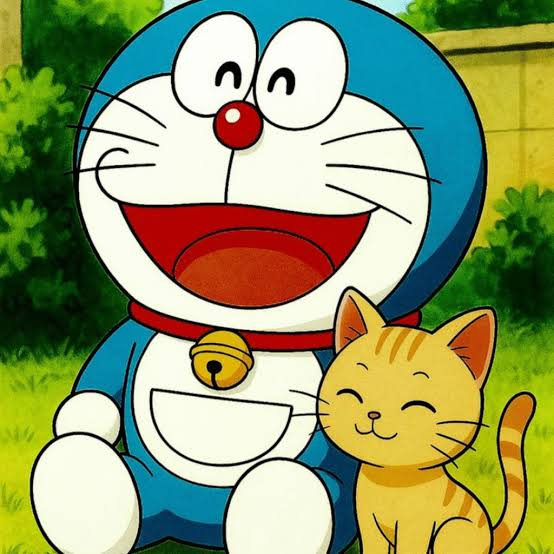
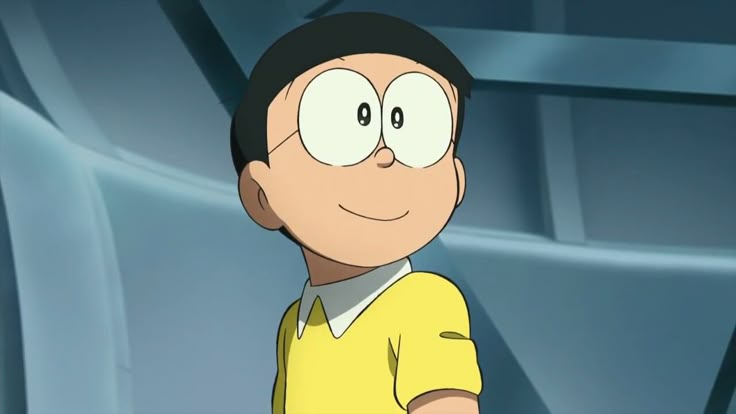
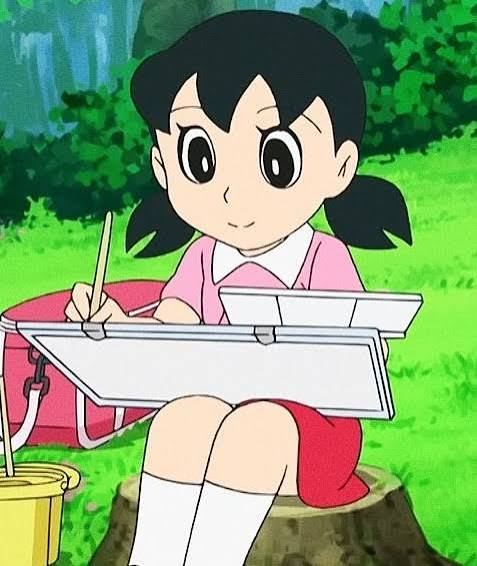
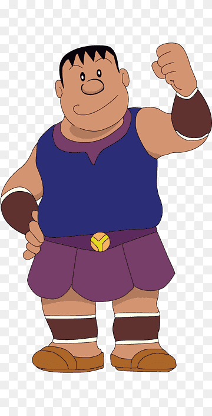
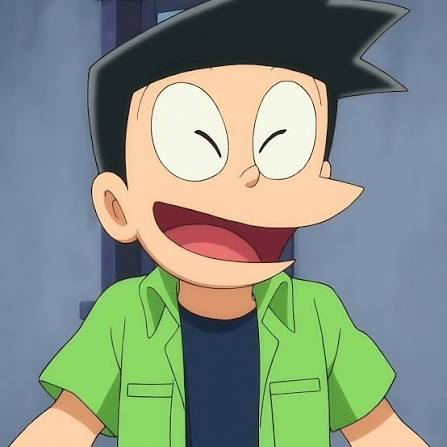
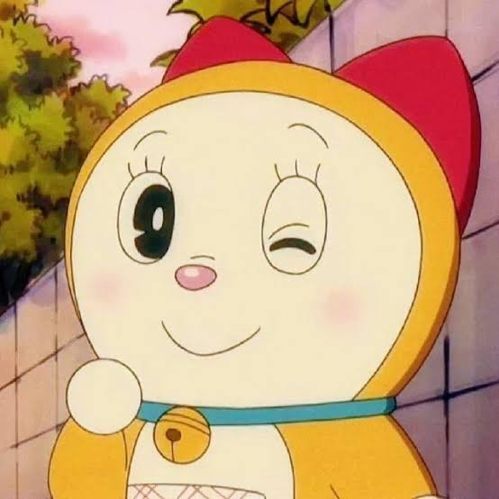
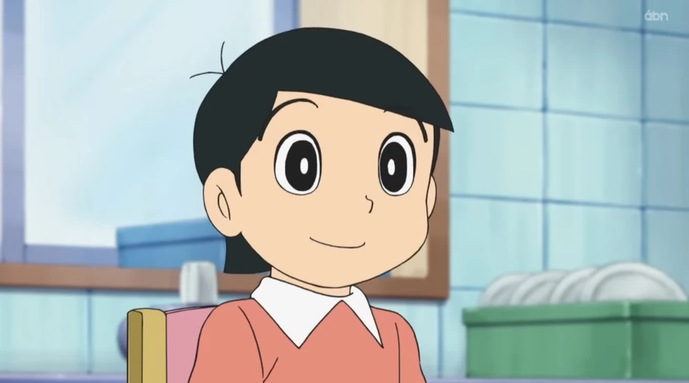

Doraemon Characters
Doraemon has many memorable characters who make the stories entertaining and enjoyable. They are Doraemon, Nobita, Shizuka, Gian, Suneo, Dorami and Dekisugi. They are some of the important characters. Their friendship and adventures make the series interesting. Each character has a different personality and plays an important role in the story.

ドラえもん (Doraemon)
Doraemon is a robotic cat from the future. He comes from the 22nd century and helps Nobita with his amazing futuristic gadgets.

野比 のび太 (Nobita Nobi)
Nobita is Doraemon's best friend. He often gets into trouble and asks Doraemon for help.

源 静香 (Shizuka Minamoto)
Shizuka is Nobita's friend and classmate. She is kind, polite and helpful to others.

剛田 武 (Takeshi Goda - Gian)
Gian is one of Nobita's classmates. He is physically strong and enjoys singing.

骨川 スネ夫 (Suneo Honekawa)
Suneo is Nobita's classmate. He likes showing off his toys and other possessions.

ドラミ (Dorami)
Dorami is Doraemon's younger sister. She is helpful and also has many useful futuristic gadgets.

出木杉 英才 (Hidetoshi Dekisugi)
Dekisugi is Nobita's intelligent classmate. He performs well in school and is helpful to others.